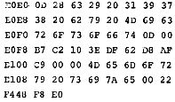

Nascom Journal |
Juni 1982 · Ausgabe 6 |
Nun noch ein anderes Thema: Anglizismen in der Rechner-Literatur. Vieles bei Rechnern liest man zunächst im Englischen, einen deutschen Begriff dafür weiß man nicht oder es gibt ihn (noch) nicht. Hinzu kommen einfache Übersetzungsfehler. Ein paar Beispiele: „Control“ ist oft nicht mit „Kontroll-“ zu übersetzen; insbesondere heißt es „Steuerzeichen“ und nicht „Kontroll-Charakter“, womit gleichzeitig auch darauf hingewiesen sei, daß ein „Charakter-Generator“ ein psychologisches Phänomen wäre. „File“ und „Datei“ sind gleichbedeutend, „Datenfiles“ ist doppelt gemoppelt. Also: Leute, versucht die Verhunzung der Sprache wenn möglich nicht mitzumachen! Übrigens ist das Journal auf dem Gebiet ja noch verhältnismäßig gut, bei manchen anderen Blättern hat man den Eindruck, daß „Fachenglisch“ Verständnis ersetzt.
Noch eine zusätzliche Information zum Acht Damen-Problem aus dem letzten Journal: die Lösung benötigt mit dem BLS-Pascal 24sec bei 2MHZ Takt.
Michael Bach, Stegen
Damit AUTO LINE NUMBER des Toolkit zusammen mit Nassys3 wieder richtig funktioniert, biete ich eine Lösung an, die nur minimalen Aufwand erfordert.
Dazu wird in der UOUT-Routine des Toolkit lediglich die Reihenfolge von 6 Bytes vertauscht:
ALT: # B151 CD AD F9 EF 20 00 NEU: # B151 EF 20 00 CD AD F9
Dies hat zur Folge, daß nun der Blank vor der Zeilennummer ausgegeben wird und damit das von Nassys3 verursachte Löschen des 1. Zeichens der Zeile. wirkungslos bleibt.
Wolfgang Haslbeck, ____ Nürnberg
Heinz Heim, Schwieberdingen und Andreas Dieckmann, Heidelberg, schlagen vor, die Adresse B15B im Toolkit mit 0C (statt 08) zu laden, um es mit Nassys3 lauffähig zu machen.
Wer sein Nascom ROM BASIC V.4.7 im RAM laufen läßt oder entsprechend abändert, kann mit dem BASIC Befehl INP(0) das Keyboard abfragen. Der Befehl liefert den Wert 0, wenn keine Taste gedrückt war. Folgende Speicherstellen sind zu aendern:
zB : Warten auf ein Zeichen:
10 A=INP(0):IF A=0 THEN 10 20 PRINT CHR§(A)
Vorschläge zu Leserbeiträgen:
1. Leserinitiative zum Erstellen eines kommentierten Disassemblerlistings z.B. von ZEAP und 8K-BASIC oder NASPEN. (Schwach kommentiert liegt bereits alles vor).
2. Gemeinsam ein Programm erstellen, das es gestattet, CP/M Software (geladen über z.B. V24) auf einem Nascom mit 48 kByte und Recorder laufen zu lassen.
Constantin Olbrich, Berlin
In Heft 10-81 veröffentlichten wir eine Kontaktadresse für Interessenten an lokalen Computerbekanntschaften. Die Resonanz war nicht gerade überwältigend. Es folgt eine Liste der „Kandidaten“ mit Angabe des Systems.
Klaus Bott, _________ ___._
____ Rastatt Tel.______/_____
(Steuer-und Regeltechnik) Nascom 2, Nassys 1
ZEAP 2.0, BASIC, Inter. Cassettentausch
Stefan Bürger, ____.___., _____ ___. __
____ Tamm-Hohenstange Tel._____/______
(gesch.) ____/___-____
Nascom 1, Nassys 1, 8K-Tape-BASIC,
ECB-Bus
Anselm Fabig, Berlin
Tel.___/_______ DD6ES
Karlheinz Körner, ___________._
____ Germersheim Tel._____/____
Nascom 2, Nassys
| Seite 3 von 24 |
|---|